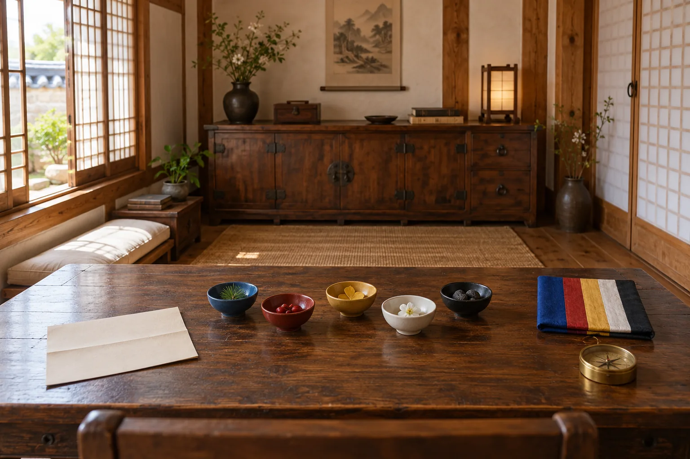

오행당의 편지 · 첫 번째 이야기
돌아오는
계절
다섯 빛이 돌아오면
당신 앞으로 남겨진 편지가 열립니다
문을 잠근 사람도, 열쇠를 기다린 사람도
생각보다 가까운 곳에 있습니다
전통 오행과 오방색에서 영감을 얻은 창작 힐링 이야기
오행당 · 돌아오는 계절
다섯 빛의 방

꺼내 둔 자료
오행당의 편지 · 첫 번째 이야기
다섯 빛이 돌아오면
당신 앞으로 남겨진 편지가 열립니다
문을 잠근 사람도, 열쇠를 기다린 사람도
생각보다 가까운 곳에 있습니다
오행당 · 돌아오는 계절

꺼내 둔 자료